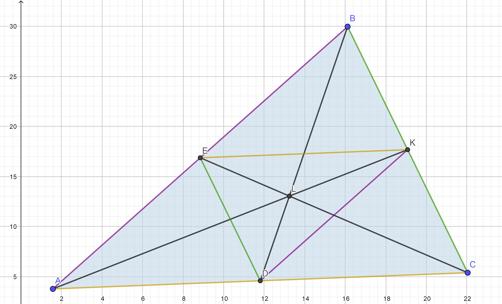

- On trace un triangle ABC quelconque
- La médiane du côté [BC] est la droite qui passe par le milieu de [BC] et le point A
- La médiane du côté [CA] est la droite qui passe par le milieu de [CA] et le point B
- La médiane du côté [AB] est la droite qui passe par le milieu de [AB] et le point C
Theoreme:
Isobarycentre

\begin{array}{{>{\displaystyle}l}}
\text{Les points E,K et D sont les milieux respectifs des côtés AB ,BC et CA.}\\
\text{Donc:}\\
\overrightarrow{AC} =2\overrightarrow{EK}\\
\overrightarrow{BC} =2\overrightarrow{ED}\\
\overrightarrow{AB} =2\overrightarrow{DK}\\
\\
\text{On cherche L l'isobarycentre du triangle ABC} \ \\
\overrightarrow{KA} =k*\overrightarrow{KL} \Longrightarrow k*\overrightarrow{LK} +\overrightarrow{KA} =\vec{0}\\
\overrightarrow{EC} =k*\overrightarrow{EL} \Longrightarrow k*\overrightarrow{LE} +\overrightarrow{EC} =\vec{0}\\
\overrightarrow{DB} =k*\overrightarrow{DL} \Longrightarrow k*\overrightarrow{LD} +\overrightarrow{DB} =\vec{0}\\
\\
\text{Ce qui est équivalent à :} \ \\
k*\overrightarrow{LK} +\overrightarrow{KA} =\ k*\overrightarrow{LE} +\overrightarrow{EC} =k*\overrightarrow{LD} +\overrightarrow{DB}\\
\\
\text{Or} \ \\
\overrightarrow{AC} =2\overrightarrow{*EK} \ \\
\Longrightarrow \overrightarrow{AL} +\overrightarrow{LC} =2\overrightarrow{*EL} +2*\overrightarrow{LK}\\
\Longrightarrow 2*\overrightarrow{LK} =\overrightarrow{AL} +\overrightarrow{LC} +2*\overrightarrow{LE}\\
\Longrightarrow 2*\overrightarrow{LK} +\overrightarrow{LA} =2*\overrightarrow{LE} +\overrightarrow{LC}\\
\\
\text{et}\\
\overrightarrow{BC} =2\overrightarrow{ED}\\
\Longrightarrow \overrightarrow{BL} +\overrightarrow{LC} =2\overrightarrow{*EL} +2*\overrightarrow{LD}\\
\Longrightarrow 2*\overrightarrow{LD} +\overrightarrow{LB} =2*\overrightarrow{LE} +\overrightarrow{LC}\\
\\
Donc\ 2*\overrightarrow{LK} +\overrightarrow{LA} =2*\overrightarrow{LE} +\overrightarrow{LC} =2*\overrightarrow{LD} +\overrightarrow{LB}\\
Donc\ 3*\overrightarrow{LK} +\overrightarrow{KA} =3*\overrightarrow{LE} +\overrightarrow{EC} =3*\overrightarrow{LD} +\overrightarrow{DB}\\
\\
\text{Par identification, k=3.
On a alors :}\\
KL=\frac{1}{3} *KA\ ;\ EL=\frac{1}{3} *EC\ ;\ DL=\frac{1}{3} *DB
\end{array}